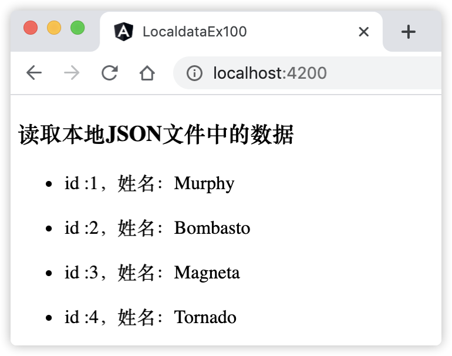
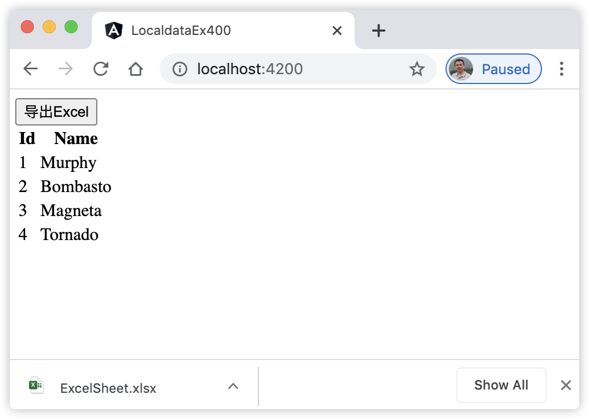

25 如何与本地数据打交道¶
日常开发过程中，不可避免的需要读取本地文件的数据。尤其是在涉及到项目的配置数据，或者本地开发测试时，读取本地文件的数据最大的好处之一是能加快程序员的开发效率。
25.1 读取本地JSON文件数据¶
本章结合Angular的特点，介绍3种不同的方式读取本地JSON文件数据。
25.1.1 使用TypeScript语言特性读取本地JSON文件数据¶
在Typescript 2.9 的官方文档中介绍的一种简单的导入本地JSON文件的解决方案，即从Typescript 2.9版本开始，支持导入本地JSON文件了，仅需要做的工作就是在文件tsconfig.json中编译选项中添加resolveJsonModule选项。即在文件tsconfig.json中，添加如下的内容：
"compilerOptions": { ... "resolveJsonModule": true, "allowSyntheticDefaultImports": true, }
上述编译配置中，resolveJsonModule选项的作用就是允许使用导入语句导入本地JSON文件，就像任何TypeScript模块一样。allowSyntheticDefaultImports选项是可选的，它的目的是允许项目识别从模块进行默认导入。Angular从6.1版本起，开始支持TypeScript 2.9，因此Angular 6.1+ 之后的版本都支持这种方式导入JSON文件。
下面通过具体的示例来讲解如何使用TypeScript语言特性导入及使用本地JSON文件数据。
25.1.2 [示例 localdata-ex100] 使用TypeScript语言特性导入及使用本地JSON文件数据¶
用Angular CLI构建应用程序，具体命令如下：
ng n localdata-ex100 -S --defaults=true
启动服务，具体命令如下：
ng serve
查看应用程序结果。打开Web浏览器并浏览到 “http://localhost:4200”，应该看到文本 “Welcome to localdata-ex100!”。
创建本地JSON格式文件src/app/_files/users.json，文件内容如下：
[ { "id": 1, "name": "Murphy" }, { "id": 2, "name": "Bombasto" }, { "id": 3, "name": "Magneta" }, { "id": 4, "name": "Tornado" } ]
编辑文件tsconfig.json，在编译选项compilerOptions中添加下面两个配置选项：
"compilerOptions": { ... "resolveJsonModule": true, "allowSyntheticDefaultImports": true, }
编辑组件。编辑文件src/app/app.component.ts，并将其更改为以下内容：
import { Component } from '@angular/core'; import users from './_files/users.json'; // 导入本地文件 @Component({ selector: 'app-root', templateUrl: './app.component.html', styleUrls: ['./app.component.css'] }) export class AppComponent { title = 'localdata-ex100'; userList: { id: number, name: string }[] = users; }
编辑组件模板。编辑文件src/app/app.component.html，并将其更改为以下内容：
<div> <h3> 读取本地JSON文件中的数据 </h3> <ul *ngFor="let item of userList"> <li> id :{{item.id}}，姓名：{{item.name}} </li> </ul> </div>
观察应用程序页面，页面显示效果如图26-1所示：
图26-1 加载及使用本地JSON文件
{kind=link}
在上述示例中，步骤5的作用是允许使用导入语句导入本地JSON文件。默认情况下，TypeScript编译器不识别导入的本地JSON文件。
25.1.3 使用ES6+导入语句导入本地的JSON文件¶
第2种解决方案是可以使用ES6+导入语句导入本地的JSON文件。这种方案的操作步骤分为3步：
首先，在Angular项目的文件夹src/app目录下新建一个文件，文件名如：json-typings.d.ts，并添加以下内容：
declare module "*.json" { const value: any; export default value; }
然后，在项目的任意目录下，创建一个本地的JSON文件，如：data.json。
最后，在需要用到该JSON数据的组件里，通过下面的语句导入其数据：
import * as data from "data.json";
下面，我们通过示例演示使用ES6+导入语句导入本地的JSON文件。
25.1.4 [示例 localdata-ex200] 使用ES6+导入语句导入本地的JSON文件数据¶
用Angular CLI构建应用程序，具体命令如下：
ng n localdata-ex200 -S --defaults=true
启动服务，具体命令如下：
ng serve
查看应用程序结果。打开Web浏览器并浏览到 “http://localhost:4200”，应该看到文本 “Welcome to localdata-ex200!”。
创建本地JSON格式文件src/app/_files/users.json，文件内容如下：
[ { "id": 1, "name": "Murphy" }, { "id": 2, "name": "Bombasto" }, { "id": 3, "name": "Magneta" }, { "id": 4, "name": "Tornado" } ]
创建文件src/app/json-typings.d.ts，并将其更改为以下内容：
declare module "*.json" { const value: any; export default value; }
编辑组件。编辑文件src/app/app.component.ts，并将其更改为以下内容：
import { Component } from '@angular/core'; import users from './_files/users.json'; // 导入本地文件 @Component({ selector: 'app-root', templateUrl: './app.component.html', styleUrls: ['./app.component.css'] }) export class AppComponent { title = 'localdata-ex100'; userList: { id: number, name: string }[] = users; }
编辑组件模板。编辑文件src/app/app.component.html，并将其更改为以下内容：
<div> <h3> 读取本地JSON文件中的数据 </h3> <ul *ngFor="let item of userList"> <li> id :{{item.id}}，姓名：{{item.name}} </li> </ul> </div>
观察应用程序页面，页面显示效果如图26-1所示一摸一样。
本示例与localdata-ex100进行比较，仅是步骤5不同，在本示例中它是通过使用ES6+导入语句导入本地的JSON文件数据。使用这种方案不在受限TypeScript的版本了，即在Angular 2+的项目中都有效。
25.1.5 使用Angular的HttpClient导入本地JSON文件数据¶
最后一种方式是使用Angular的HttpClient导入本地JSON文件数据。在Angular工程项目中，文件夹src/assets里面的内容被视为静态文件，常放置一些样式（CSS）文件，图片（Image）文件等，而这些文件在项目启动后，可以通过URL进行访问。同理，我们借助这个特性，将JSON文件放置在该目录下，然后在组件中通过HttpClient访问URL的方式，就可以读取到JSON文件里的数据了。
下面通过示例来演示使用Angular的HttpClient导入本地JSON文件数据
25.1.6 [示例 localdata-ex300] 使用Angular的HttpClient导入本地JSON文件数据¶
用Angular CLI构建应用程序，具体命令如下：
ng n localdata-ex300 -S --defaults=true
启动服务，具体命令如下：
ng serve
查看应用程序结果。打开Web浏览器并浏览到 “http://localhost:4200”，应该看到文本 “Welcome to localdata-ex300!”。
创建本地JSON格式文件src/assets/users.json，文件内容如下：
[ { "id": 1, "name": "Murphy" }, { "id": 2, "name": "Bombasto" }, { "id": 3, "name": "Magneta" }, { "id": 4, "name": "Tornado" } ]
编辑模块。编辑文件src/app/app.module.ts，并将其更改为以下内容：
import { BrowserModule } from '@angular/platform-browser'; import { NgModule } from '@angular/core'; import { AppComponent } from './app.component'; import { HttpClientModule } from '@angular/common/http'; @NgModule({ declarations: [ AppComponent ], imports: [ BrowserModule, HttpClientModule ], providers: [], bootstrap: [AppComponent] }) export class AppModule { }
编辑组件。编辑文件src/app/app.component.ts，并将其更改为以下内容：
import { Component, OnInit } from '@angular/core'; import { HttpClient } from '@angular/common/http'; @Component({ selector: 'app-root', templateUrl: './app.component.html', styleUrls: ['./app.component.css'] }) export class AppComponent implements OnInit { title = 'localdata-ex300'; userList: { id: number, name: string }[]; constructor(private httpClient: HttpClient) { } ngOnInit() { this.httpClient.get<{ id: number, name: string }[]>("assets/users.json").subscribe(data => { console.log(data); this.userList = data; }) } }
编辑组件模板。编辑文件src/app/app.component.html，并将其更改为以下内容：
<div> <h3> 读取本地JSON文件中的数据 </h3> <ul *ngFor="let item of userList"> <li> id :{{item.id}}，姓名：{{item.name}} </li> </ul> </div>
观察应用程序页面，页面显示效果如图26-1所示一摸一样。
本示例中，文件夹src/assets里面的JSON文件访问的URL地址为：“assets/users.json”，这意味着，使用这种方式读取的本地文件，在项目外也可以通过URL(例如本地：http://localhost:4200/assets/users.json）单独访问JSON文件。
25.2 导出数据到EXCEL表格¶
在工作中，我们经常需要将数据导出成PDF、EXCEL等格式的数据，用于生成发票、报表等分析数据。 我们选择SheetJS库操作Excel，SheetJS库中的js-xlsx模块是目前关注度最高的处理EXCEL表格的JavaScript库。js-xlsx将注意力集中到了数据转换和导出上，所以它支持相当多种类的数据解析和导出，如支持xls、xlsx、csv和ods等多种类型表格格式，且功能非常强大。
25.2.1 安装xlsx模块¶
在Angular项目中使用SheetJS库中的js-xlsx模块，首先需要安装它，具体命令如下：
npm i xlsx -S
然后在需要使用该模块的组件中，使用命令导入xlsx：
import * as XLSX from 'xlsx';
下面我们通过示例演示如何使用SheetJS库中的js-xlsx模块将数据导出到EXCEL表格。
25.2.2 [示例 localdata-ex400] 使用xlsx模块导出数据到EXCEL表格¶
用Angular CLI构建应用程序，具体命令如下：
ng n localdata-ex400 -S --defaults=true
安装xlsx模块并启动服务，具体命令如下：
npm i xlsx -S ng serve
查看应用程序结果。打开Web浏览器并浏览到 “http://localhost:4200”，应该看到文本 “Welcome to localdata-ex400!”。
创建本地JSON格式文件src/app/_files/users.json，文件内容如下：
[ { "id": 1, "name": "Murphy" }, { "id": 2, "name": "Bombasto" }, { "id": 3, "name": "Magneta" }, { "id": 4, "name": "Tornado" } ]
编辑文件tsconfig.json，在编译选项compilerOptions中添加下面两个配置选项：
"compilerOptions": { ... "resolveJsonModule": true, "allowSyntheticDefaultImports": true, }
编辑组件。编辑文件src/app/app.component.ts，并将其更改为以下内容：
import { Component, ViewChild, ElementRef } from '@angular/core'; import users from './_files/users.json'; // 导入本地文件 import * as XLSX from 'xlsx'; @Component({ selector: 'app-root', templateUrl: './app.component.html', styleUrls: ['./app.component.css'] }) export class AppComponent { title = 'localdata-ex400'; userList: { id: number, name: string }[] = users; fileName = 'ExcelSheet.xlsx'; // ViewChild装饰器获取模板中的元素 @ViewChild('exceltable') excelTable: ElementRef; exportexcel(): void { const ws: XLSX.WorkSheet = XLSX.utils.table_to_sheet(this.excelTable.nativeElement); /* 生成 workbook 和添加 worksheet */ const wb: XLSX.WorkBook = XLSX.utils.book_new(); XLSX.utils.book_append_sheet(wb, ws, 'Sheet1'); /* 保存数据到文件中 */ XLSX.writeFile(wb, this.fileName); } }
编辑组件模板。编辑文件src/app/app.component.html，并将其更改为以下内容：
<div> <button (click)="exportexcel()">导出Excel</button> <table #exceltable> <tr> <th>Id</th> <th>Name</th> </tr> <tr *ngFor="let item of userList"> <td>{{item.id}}</td> <td>{{item.name}}</td> </tr> </table> </div>
观察应用程序页面，页面显示效果如图26-2所示：
图26-2 导出数据到EXCEL表格中
{kind=link}
在上面的步骤中，完成了以下内容：
步骤2中，安装了xlsx模块；
步骤5中，使用TypeScript语言特性读取本地JSON文件数据；
步骤6中使用ViewChild装饰器获取模板中定义的表格元素“exceltable”，接着将其值转换为本地DOM元素类型，先生成 workbook对象和添加worksheet表，最后使用writeFile()方法将表格数据保存到指定的EXCEL文件中；
在页面中点击“导出Excel”按钮，将自动生成ExcelSheet.xlsx文件并下载到本地。
25.3 小结¶
本章介绍了如何在Angular工程中读取本地JSON数据和导出数据到EXCEL表格中，重点介绍了3种导入本地JSON数据的方式，同时分析了它们的使用范围，通过本章的示例，读者掌握了如何与本地数据打交道。